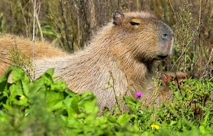

Kapybara
Výskyt:
Žije jen v jižní Americe, jinak nikde jinde na světě.
Žije hlavně blízko řek s větším travním porostem.
Vzhled a stavba těla:
Kapybara je největší hlodavec na světě.
Je vysoká až půl metru a váží až kolem 60 kg.
| Číslo |
Název země |
| 1. |
Panama |
| 2. |
Kolumbie |
| 3. |
Bolívie |
| 4. |
Argentina |
Země výskytu kapybary
Způsob života:
Žije ve velkých skupinách blízko řek, někdy až 100 zvířat pohromadě.
Přes den se kapybary ukrývají, večer se vydávají za potravou. Jsou hodně plaché.
Potrava:
Živí se výhradně rostlinami, takže je to býložravec.
Jí hlavně:
- trávy
- vodní rostliny
- kůru stromů
V místech, kde jsou pole, prý občas pojídá i melouny a zrní.
Rozmnožování:
Samice mají jednou nebo dvakrát do roka až 8 mláďat.
Zajímavost:
Jméno kapybara má původ v indiánském jazyku a znamená “pán tenkého listí”,
něco jako “trávožrout”.

Fotografie kapybary
Chceš-li se o tomto roztomilém zvířátku dozvědět více, navštiv tento odkaz